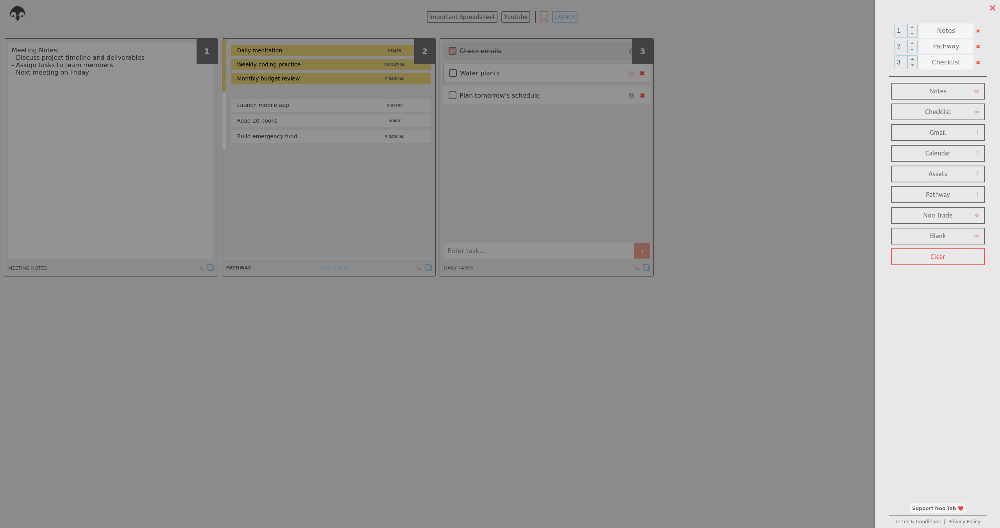
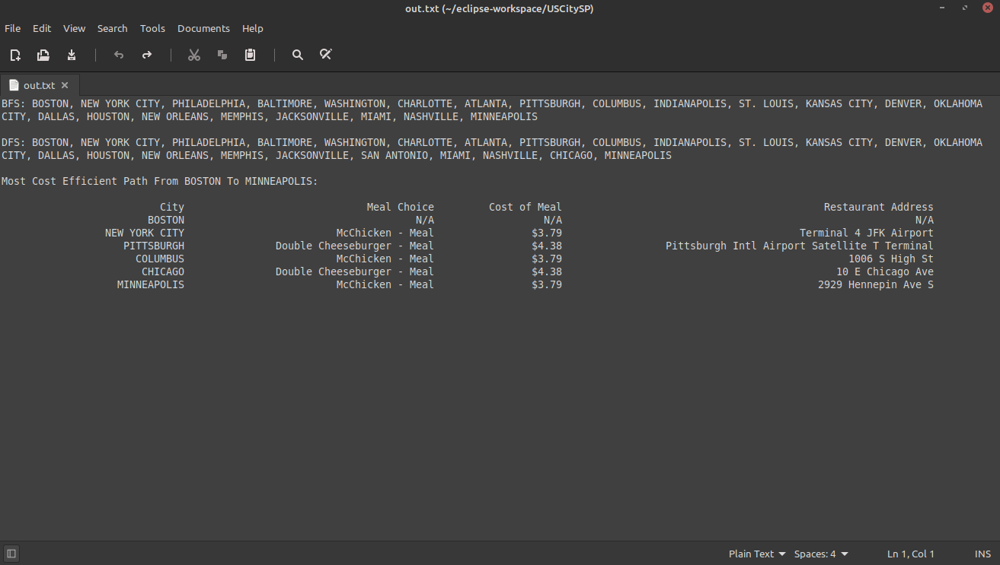

Hey, welcome to my website! I'm a Software Developer that graduated with a B.Eng (Software Engineering) from McMaster University with a diverse range of skills and experiences in full stack development. I have a passion for space and an interest in a variety of space development technologies. My main career interests are in software fields relating to software and AR/VR development. Through my involvement in executive roles within McMaster's engineering society, I have also become highly proficient in all aspects of leadership - being able to lead and unite teams in identifying and resolving challenges of both technical and social nature, all while being accountable to affected stakeholders and adjudicatory bodies.
Overall, I am open to learning about any topic in computing and can quickly pick up the essential skills and knowledge necessary for it. The personal projects that I am currently working on are small in scope and mainly focused on learning and becoming efficient with the given language, IDE, or tool used in them. In the not-too-distant future, I plan to shift my focus more towards larger projects around global issues in technology and software.
I can speak three languages, being fluent in both English and Romanian, with a working proficiency in French. I've been practicing Muay Thai since 2016, becoming a junior instructor and having the opportunity to train under a world-champion Kruyai. I have a love for every type of board - having learned to ride snowboards, skateboards, longboards, and pennyboards, I'm always happy to take on new challenges! My other hobbies include running, reading, and playing the electric guitar!
➢ Leading the MES response to COVID-19 in an effort to continue providing our services to students and to keep them socially connected throughout the cancellation of in-person classes and non-essential events by McMaster University.
➢ As part of a team, successfully responded to the Student Choice Initiative policy implemented by the provincial government in January 2019 (deemed unlawful, November 2019) with a 71% retention in student MES membership.
➢ Finished the Waterloo Harvest Half 2019 half-marathon with a 5:21 pace.
➢ Won McMaster Hebocon 2020.
I hope you enjoy your experience on my website, feel free to contact me about any questions or inquiries!
Projects
Utrition - April 2023
Open source project that allows users to track their progress towards their health goals.
Users can upload a picture, speak, or type out what they ate in natural language, and Utrition provides all
the nutritional data of the meal and saves it in the user's profile. The profile contains data visualizations
and metrics to assist users in tracking their nutrition goals.
Nootab - March 2023
Customize your browser with a minimalist new tab page that provides seamless access to search, calendar scheduling, and note-taking, all with customizable colour themes. Try it out here!

Questly - November 2022
Web application designed to assist middle school teachers in delivering computer
science education to their students. Questly offers an online classroom management system along with
grade-specific computer science content, modules, and assessments. Additionally, it provides problem
walkthroughs, progress tracking, and grade reporting to teachers.
ebookGenesis - March 2021
ebookGenesis is a python bot that can find and download any ebook from just its name, using Internet Relay Chat channels to crawl existing ebook repositories and enabling file transfers through the Direct Client-to-Client sub-protocol of IRC. One of the only functioning, open-source, IRC ebook bots. The goal of this project was to familiarize myself with networking protocols and building bots.
alexmoica.com - July 2020
alexmoica.com is my personal professional website built with a pure HTML, CSS, and JavaScript frontend. I aim to keep this website regularly updated with major developments in my life, career, and other involvements. The goal of this project was to apply my knowledge of HTML and CSS to a long-term project, as well as to have a website to promote myself throughout any future endeavours.
USCitySP - March 2020
USCitySP is a program used to find the shortest and most cost-efficient path between any two US cities, providing the most direct path while taking into account stops for food in each city. Written in Java and making use of Dijkstra's shortest path algorithm, USCitySP outputs the BFS and DFS traces, as well as the shortest path with city names, meal prices, and restaurant addresses, into a text file. The goal of this project was to learn how to create and manipulate graphs and graphing algorithms in Java.

Food Identifier - November 2019
Food Identifier is a machine learning application created to distinguish between a variety of fruits and vegetables. Based on TensorFlow and using the CIFAR-100 database for training images, this application identifies user images, entered through a Tkinter GUI, by food type. The goal of this project was to learn the fundamentals of machine learning and the Tensorflow library implemented in Python.
Assets - May 2018
Assets is a money management system for PC that dynamically tracks multiple account balances. Assets stores the transaction records for each account into a separate text file, which is used to create live graphs and a history of deposits and withdrawals from the given account. The goal of this project was to learn the basic and advanced features of the standard python graphics library, Tkinter, and how to interface it with the matplotlib library.
Curriculum Vitae
Oussema Jouni, Alex Moica, Gavin Furtado, Eshana Mariam John, Varsha Santhosh, Daniel Asante, KangSan Kim, and Solomon Appekey. (2023) 4D LIDAR and Sensor Fusion for Autonomous Rover Missions. 74th International Astronautical Congress
Contact
Alex Moica Hamilton, Ontario, Canada alex@alexmoica.com